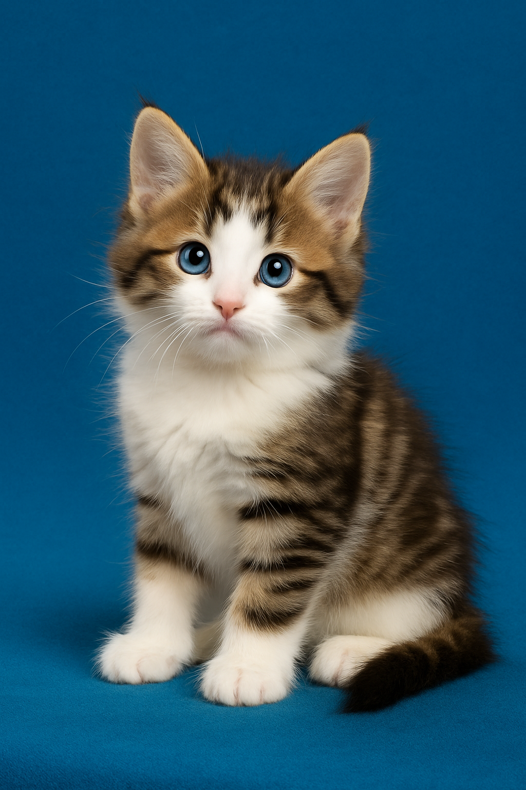

Harry
Harry is a curious and adventurous kitten who loves to explore his surroundings. He is very playful and enjoys interactive toys.
Born of the forest, raised with heart - we specialize in the majestic and affectionate Norwegian Forest Cat, preserving their natural beauty and heritage.
Nordhaven Forest Cats began with our first “Wegie,” Ouijakats Rebeus Hagrid, a red mackerel tabby and white male whose gentle temperament and striking presence made him perfect for our very first show cat. His success in the ring inspired our lifelong passion for this remarkable breed. Today, our foundation stud,Featherland Overland Flyer, a brown classic tabby and white male, proudly carries that legacy forward. Flyer continues to represent Nordhaven Forest Cats in The International Cat Association, TICA shows, embodying the strength, elegance, and friendly spirit that define the Norwegian Forest Cat.

Click a kitten’s name to learn more about their personality.
Harry is a curious and adventurous kitten who loves to explore his surroundings. He is very playful and enjoys interactive toys.

Hermione is intelligent and observant. She enjoys puzzles and learning new tricks, making her a delightful companion.
Luna is a gentle and affectionate kitten who loves cuddles. She has a calm demeanor and will enjoy quiet time with her new humans.
Malfoy is a confident and sociable kitten. He thrives on interaction and loves being the center of attention.
Ron is a playful and energetic kitten. He enjoys chasing toys and will engage in lively play sessions with his new family.
Enter a number between 1 and 10 to see if you can find your feline match!